Фотогалерея
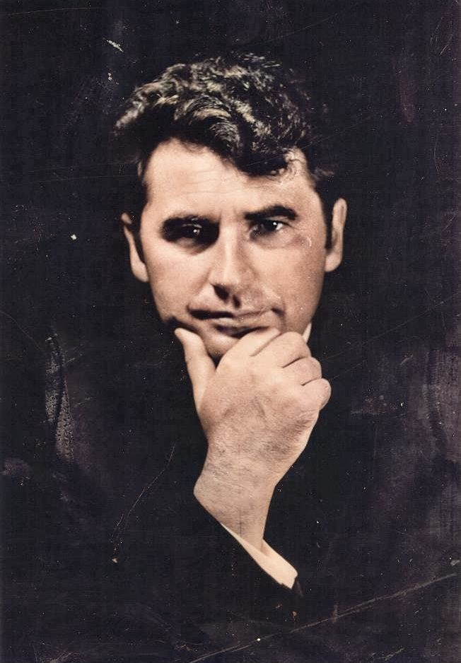
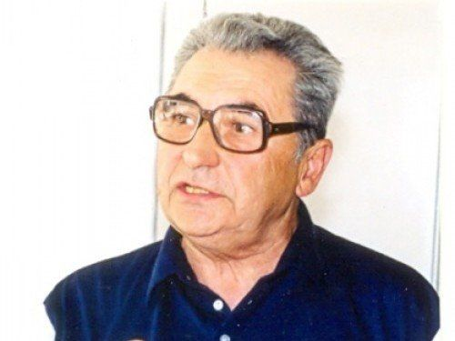
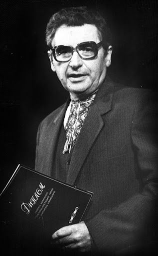
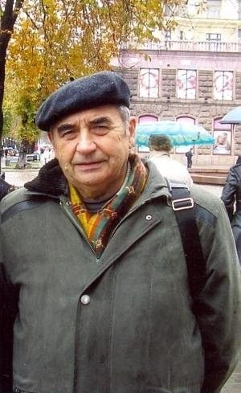
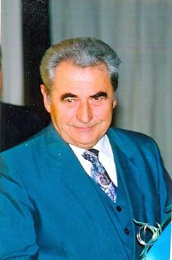
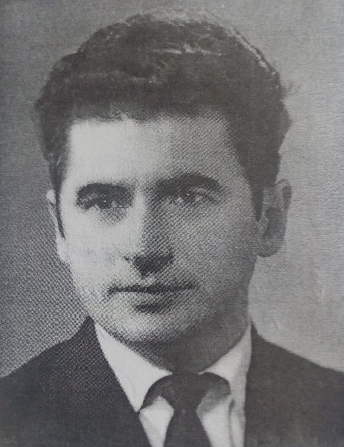
Йосип Струцюк
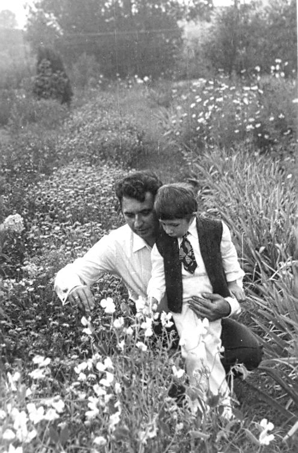
З сином Богданком, 1976
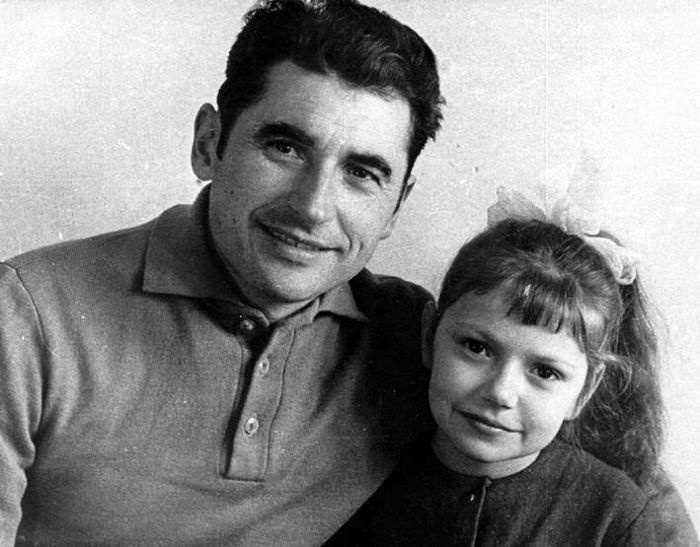
Йосип Струцюк з донькою
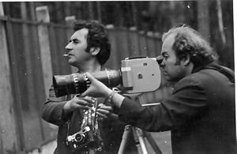
На кінозйомках у Біловезькій Пущі, 1977
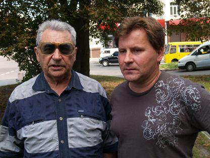
«Родоводу мого неспокій, або ж Писати так, як живеш, а жити — як пишеш»
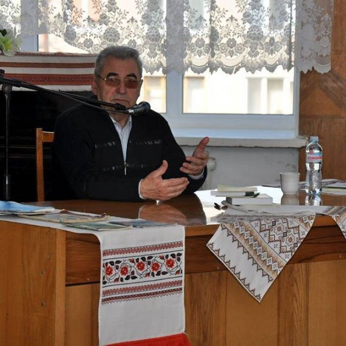
«Своє дитинство пов'язую з Кременцем та Копачівкою»
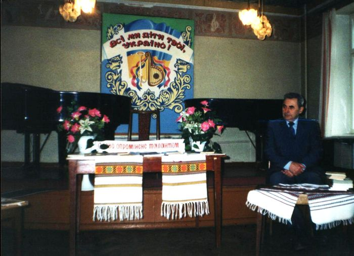
«Слово, опромінене талантом». Рожищенська музична школа
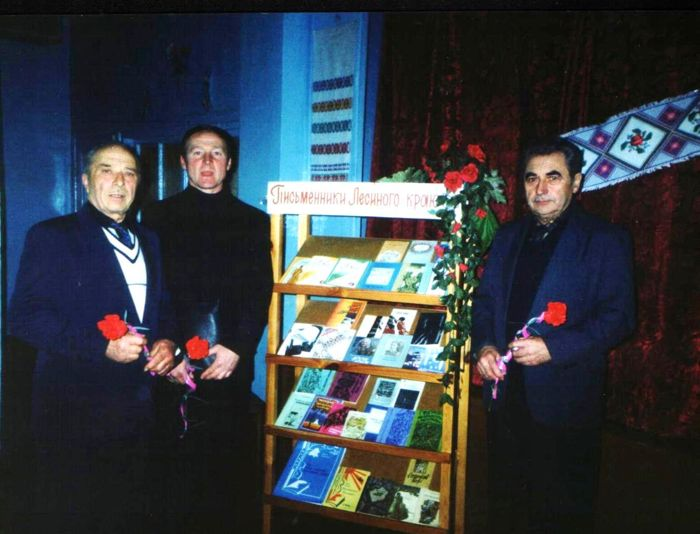
Степан Курило-Шванц, Олексій Будчик, Йосип Струцюк
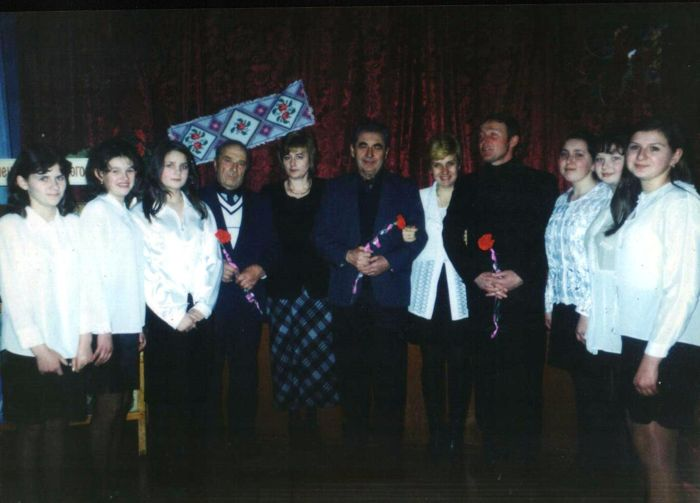
Урок-зустріч зі Степаном Курило-Шванцом, Й. Струцюком, Олексієм Будчиком
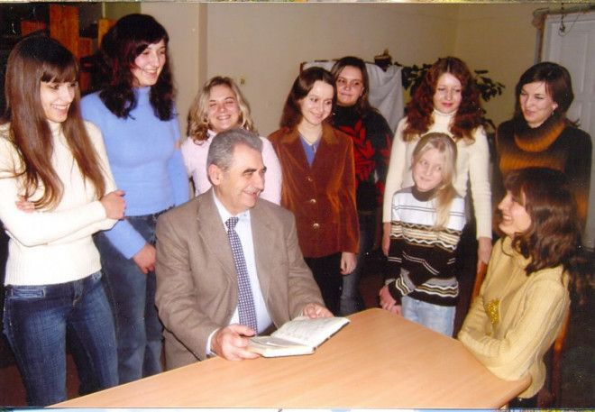
На засіданні літстудії «Лесин кадуб»
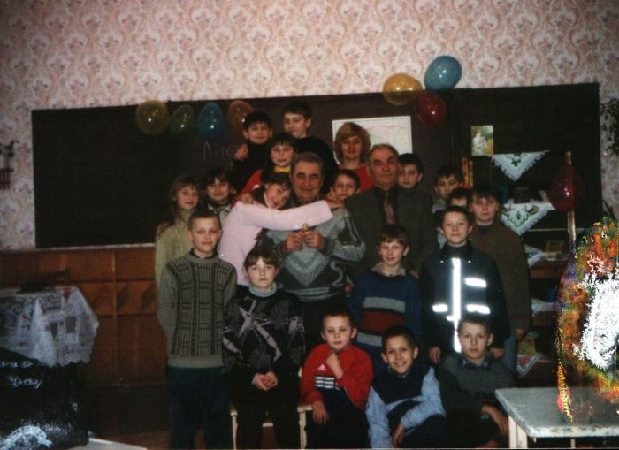
Після уроку-зустрічі з літератури рідного краю, 2004
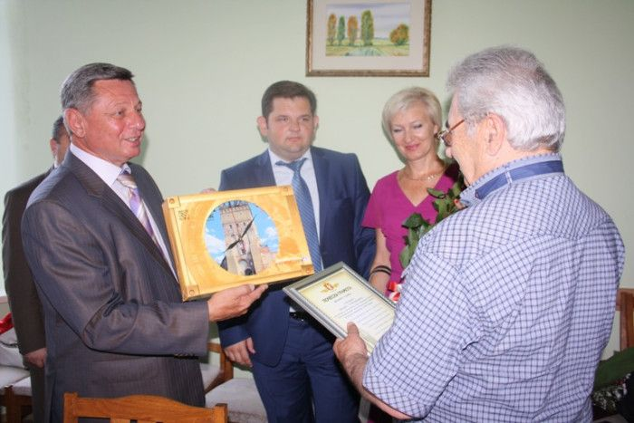
Міський голова Луцька Микола Романюк вітає з ювілеєм
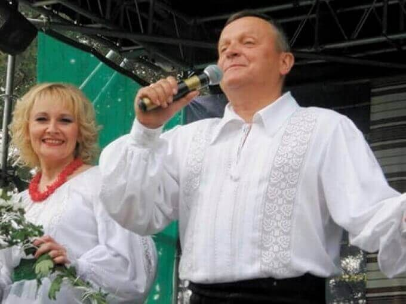
Дует «Душа Волині»
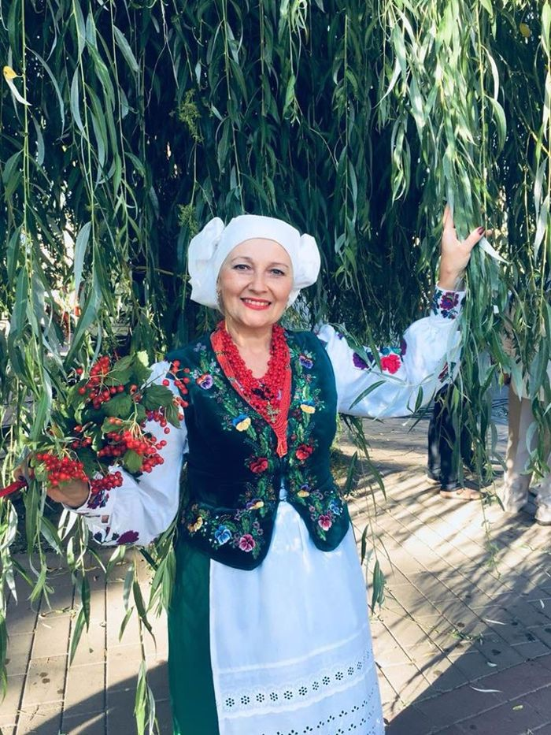
Алла Опейда
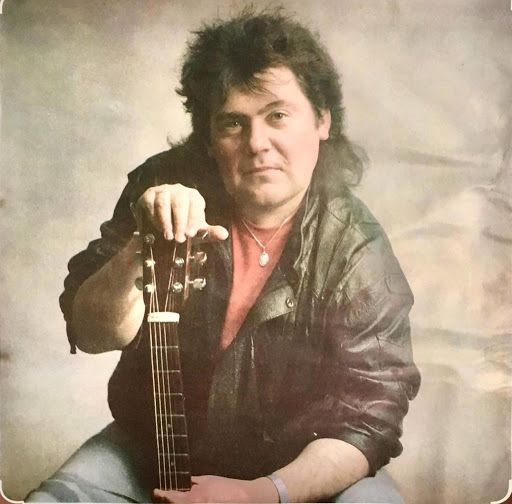
Олександр Гаркавий
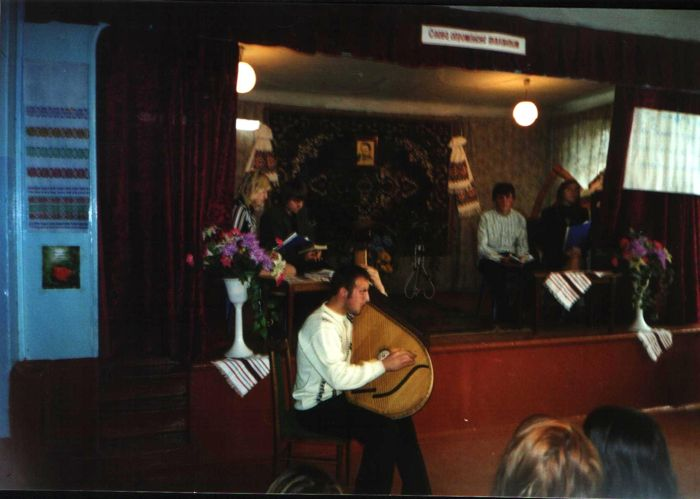
Володя Новосад, учень школи, виконує пісню на слова Й. Струцюка
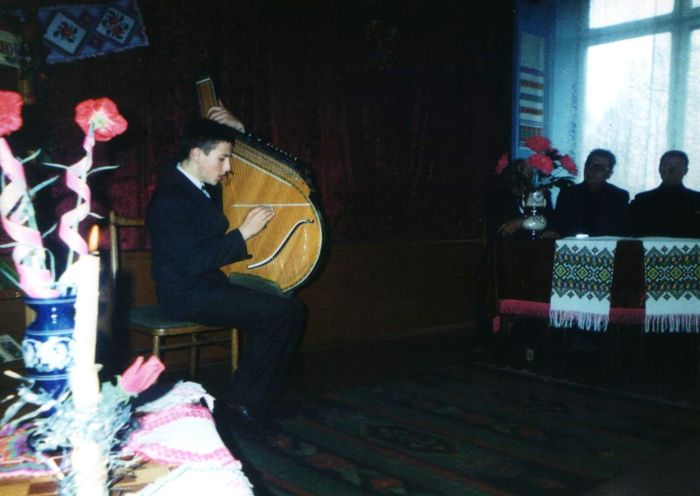
Володя Новосад виконує пісню на слова Й. Струцюка «Нас весна не там зустріла». За столом: Й. Струцюк, О. Будчик
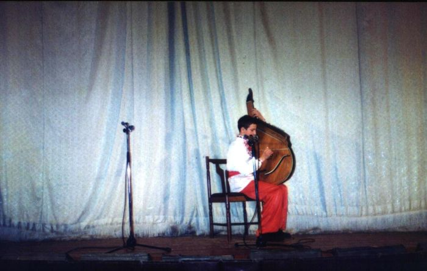
Володя Новосад виконує пісню на слова Й. Струцюка «Запорізький козак»